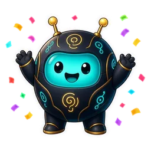

ChangelogWhat's new
Highlights of what changed, newest first.
- Levels. One level per member in every server: chat and voice time earn XP, with a new
/rankcard and a Levels option on/top. It is the same level/profileand the Level Up badge already showed, now one system, and everyone kept their level. Level-up messages and level roles are off by default: a server manager turns them on from the new Level-up messages & roles card in the web dashboard (beta). - Welcome messages only where they were set up. Setting the welcome channel in one server could make Lumo start welcoming new members in other servers that have a #welcome channel, until the next restart. Each server's welcome channel now only affects that server.
- Message counts and XP agree. Discord's system notices (someone joined, boosted or pinned a message) no longer count as messages on
/profileand/top, the same as for XP, and posts in the Void bait channel no longer count or earn XP. - Premium codes start with LUMO-. New Premium codes look like
LUMO-XXXX-XXXX. Codes handed out before today (AETH-XXXX-XXXX) keep working exactly as before with/premium redeem.
- Buy Premium on Ko-fi, no waiting. Lumo Premium ($4.99/month per server) is now a membership on Ko-fi and turns on by itself: after paying, a server Administrator runs the new
/premium claimwith the email you paid with, and every renewal extends the same server automatically. If you cancel, Premium stays until the end of the month you paid for. - Badges on
/profile. Members can now collect 14 badges, free in every server./profileshows your top six and how many you have, and the new Badges button lists them all: what you've earned and, for the rest, how to earn them with a progress bar. Chat, voice, level, streak and Veteran badges count in each server on its own; coin, game, Premium and Pioneer badges follow you everywhere. Three are hidden until you find them. Badges are permanent, and Pioneer is only for wallets started before January 1, 2027. - Live numbers on the website. The home page now shows how many servers Lumo is in and how many members those servers have, and keeps it up to date while the page is open. Only those two totals are shared.
- Lumo Coins. The play-money currency is now called Lumo Coins. Balances, streaks and game stats are unchanged.
- New name: Lumo. The bot has a new name, Lumo (formerly Aetherion), with the same robot mascot, commands, settings and data. Nothing needs to be set up again: every server's settings, coins, giveaways, polls, reaction roles and logs carry over. Old buttons keep working.
- Void bait channel. Administrators can run
/setup voidto make a#voidchannel, or point it at one they already have. A post from anyone who is not an admin or Manage Server is deleted and logged. It starts as log only. The same command can turn on a timeout, a kick, or a softban, or turn Void off. It shows on/setup statusand in the web dashboard. - 12 more robot poses. Lumo's robot emoji set grows from 24 to 36 poses (faceplant, popcorn, coffee, box, vibe, ohno, flex, peek, typing, lava, spin, yeet, plus the original 24).
- Robot emojis survive restarts. Lumo's robot emojis in messages it already sent no longer turn into plain
:aeth_…:text after the bot restarts or updates. The emojis are now only replaced when their picture actually changes, so older replies, cards and panels keep showing the robot. - Quicker everyday chat replies. Simple chat messages now get an answer sooner. Questions that need more care, like images, code, math and current events, get the same careful treatment as before.
- Robot mascot in replies. Lumo's new robot now shows up as a small emoji in its replies, in every server (they are the bot's own emojis, so servers don't need to add anything): waving on the
/helpoverview, playing on the/gamehub, wearing shades on/profile, with headphones on the music Now playing card, cheering on giveaways, with a light bulb on the free-tier/premium status, happy with coins on/coins dailyand on game wins (a trophy for a big win of 3x your bet or more), in tears on a loss, a thumbs-up when/purgeor/forgetmeis done, a nervous face when you can't use something (admins only, someone else's game, missing permissions) and a confused or sad face on errors. - Profile banner and bio for Lumo. Premium servers can now give Lumo its own profile banner and bio ("About me") in their server, next to the name, personality and avatar.
- New robot mascot in the dashboard. the web dashboard (beta) has a new look for its logo: the little black-and-gold robot replaces the old crystal. It is in the header, the browser tab icon and the phone home-screen icon, and says hello on the start page.
- Faster status changes. Lumo's custom status bubble now changes every 25 seconds (it was every 90 seconds).
- New status lines. the custom-status cycle now shows 25 fresh lines about what Lumo can do (like "Type /help to get started", "Try /game for a quick round" and "Reaction roles made easy") mixed with a few space-themed ones.
- Gradient note on the Color roles card. the web dashboard's Color roles card now says it is a ready-made set of 12 gradient name colors, and that Discord only draws the gradient on a server that has unlocked Enhanced Role Styles (a perk unlocked with 3 Server Boosts, separate from the Boost level); without it the roles still work and show the first color of each gradient.
- Bigger casino house wallet. Lumo's house wallet in every server now starts at 100,000,000 Lumo Coins (it was 10,000,000), so big wins never run it dry.
- Coin Toss glow-up. the coin toss in
/gamehas a new shiny gold Lumo coin with a different Heads and Tails face, a metal edge and a soft shadow. - Emoji picker for reaction roles. every role row in the web dashboard (beta) reaction role form (Create a panel and a panel's edit page) now has a small smiley button next to the emoji box.
- Streak on the activity card. the activity card in
/profilenow has a Streak panel instead of Top channels: a flame and the number of days in a row you have sent a message (Eastern Time), your best streak, and a small bar chart of your messages for the last 7 days. - Easier reaction role panels. the Create a panel form in the web dashboard (beta) is clearer.
- Date channel time zone. each server can now choose the time zone of its date channel. In the web dashboard (beta) open Settings → Date channel, tap the box, type a city or region (for example
Europe/ParisorAsia/Tokyo) and pick one from the list. - Reaction role form no longer overflows on wide-but-cramped screens. on a phone in "desktop site" mode (and on narrow desktop windows) the form column was squeezed, so the Message box and the "Pick several" card stuck out past their cards.
- Coin Toss Play Again. Same bet and Double after a coin toss now take you back to the Heads / Tails buttons with the new bet already set, so you choose a side every time instead of Lumo repeating your last call.
- Role rows line up in the dashboard. in the reaction role form the "Gives this role" label no longer wraps into three lines and its dropdown no longer shrinks to a tiny box that spills out of the card.
- No dashboard link on empty reaction role panels. a reaction role panel with no roles yet now says "No roles yet. An admin adds them in the web dashboard (beta)." without the web address, in Discord and in the dashboard's live preview.
- Reaction roles in the dashboard use standard emoji only. server (custom) emoji do not work in the web dashboard's reaction role form, so the "or server emoji" hint and the server-emoji suggestion list are gone.
- Smoother games. a pass over every
/gamegame. Poker, Blackjack, Coin Toss, Higher or Lower and Connect Four now draw their table pictures several times faster (the bot no longer pauses for a moment on every move). /playand/voiceonly show up in servers. like the other server commands, they no longer appear in direct messages, where they could not work anyway.- Videos are 3 seconds. every video Lumo makes is now 3 seconds long (it was up to 8). It still counts as one of the monthly image and video generations.
- Giveaway, poll and Premium-redeem commands are for Administrators.
/giveawayand/poll(every subcommand, includinglistandresults) and/premium redeemnow need the Administrator permission instead of Manage Server. - One monthly limit for images and videos. images, image edits and videos now share one pool: each server gets 15 image and video generations per month in total, and each person can make 2 per month in a server (it was 30 images and 10 videos per server, and 1 image per person).
- New AI reply limit. each server now gets 100 AI replies per day (it was 500). Each person still gets 20 per day, resetting at midnight ET.
- Welcome cards. New members now get a welcome card with their avatar, name and member number next to the welcome message, free in every server. In the web dashboard (beta), the new Welcome page lets managers change the card's wording and the message, preview it live, turn it off or reset it.
- Music queue and Skip.
/playnow adds songs to a queue (up to 25 waiting per server) instead of replacing what's playing, and the next song starts by itself. The now-playing message shows what's up next and has Pause/Resume, Skip, Stop and Queue buttons, and/queue view,/queue removeand/queue cleartidy the list. - Light mode for the dashboard. the web dashboard (beta) now has Dark (still the default), Light and Auto (follows your device). Switch it from the Appearance picker in your profile menu (tap your avatar, top right).
- Safer web dashboard logins. every dashboard page and button now checks with Discord, right then, that you still manage the server if Lumo has not seen you recently.
- Messages starting with
!. a normal message that starts with!followed by a word Lumo uses privately is no longer ignored silently. It is treated like any other message, so it can get a normal reply or be part of the conversation. /playlinks checked properly./playnow looks at a link's real address before using it, instead of accepting any text that merely contains a music site's name. Normal SoundCloud links work as before.- Security hardening before opening to everyone. reaction-role panels are now only built from messages Lumo itself posted, so nobody can fake a panel by typing one; reaction and
/reactionroleroles can no longer be roles that have the Administrator permission (the same rule auto-role already had);/playonly accepts real SoundCloud addresses (it used to accept any link that merely contained the word); Lumo never pings @everyone, @here or roles by accident in its replies (it can still reply to and mention people); and the activity counters behind/rankand the leaderboard are saved in batches instead of rewriting the whole file on every message, so large servers stay fast. - A one-time setup tool is gone. the temporary tool that built Lumo's own support server (channels, roles, rules) has been removed from the bot now that the server is finished.
- Images and video follow Discord's and the AI provider's rules. Lumo never makes explicit sexual content (nudity, sex acts). Suggestive images (lingerie, "sexy" and similar) are made only in age-restricted channels; in other channels it declines.
- Friendlier by default. when someone is rude to Lumo it answers with a short, playful clap-back instead of swearing back, and it keeps its language clean unless the channel is age-restricted.
- Less is remembered. the short-term channel memory (first 280 characters of recent messages, kept for 3 days) is now kept only in servers with Premium, and not in channels where the AI is switched off in AI channels.
- AI channels. server admins (Manage Server) can now choose where Lumo's AI chat answers, in the web dashboard (beta): open Features → AI channels (or Settings).
- Giveaways and polls. free for every server, no AI.
/giveaway start(prize, duration, winners, optional required role),end,reroll,cancelandlist;/poll create(question, up to 10 options, optional duration, optional multiple choice),close,resultsandlist. - Lumo is now simply "AI-powered". the help pages, the join message, the website and the support server describe the chat, voice and image features as AI instead of naming a model.
/coins dailyis now a plain command. the daily claim no longer uses a true/false option. Use/coins dailyto claim your coins (same amount, same Eastern-day reset, same streak) and/coins walletto see your wallet and the server top 10.- Sturdier hosting. Railway now checks
/healthzbefore switching to a new deploy (config inrailway.json), and/healthzreports a problem if the Discord connection has been down for more than 2 minutes (short reconnects do not count). - Dashboard open to server managers. anyone who manages a server Lumo is in can now log in to the web dashboard (https://dashboard.lumobot.org).
- Reaction roles and Customize moved to the dashboard. the
/reactionroleand/customizeslash commands are gone; everything they did is in the web dashboard (beta): post, edit and delete reaction-role panels, add the gradient color roles panel with one button, and for Premium servers set the bot's name, personality and avatar (upload a PNG, JPG or GIF), or reset them. - New fair-use limits. each person gets 20 AI replies per day in a server, and each server gets 500 AI replies per day in total (it was 300), resetting at midnight ET.
- Dashboard on phones: new More tab. the bottom bar now has five tabs: Overview, Features, Settings, Roles and More.
- Dashboard: top banner removed, small Beta chip instead. the dashboard is officially in beta, so the gold banner at the top of every page and the related wording are gone. A small Beta chip now sits next to the logo in the header and on the landing page.
- Dashboard: new Lumo space look. the dashboard now wears the Lumo brand colours from the monolith artwork: deep black/navy space with a faint, still starfield and soft nebula glow, matte dark cards with thin borders, and a cyan-to-amber "slit" accent on buttons, the active menu tab, progress bars and icon glows.
- Dashboard: icons now visibly bob on phones too. the Features icons float gently up and down all the time (about 3px, slow and staggered, so they never move in lockstep), and give a quick little hop when you hover, focus with the keyboard or tap a card.
- Web dashboard is in beta with limited access. only the bot owner can log in to the dashboard for now. Anyone else who signs in sees a friendly "Dashboard access is limited for now" page and no session is created.
- Dashboard: Features page. a new Features item in the server menu shows everything Lumo can do as calm cards: an icon, a name, one line about it and a status chip (On, Off, Needs setup, Needs attention or a 🔒 Premium lock that says what it unlocks).
- Dashboard: Economy page and a smoother dashboard. the Economy item in the server menu is now live.
- Dashboard: reaction roles and Customize. two new pages in the server menu.
- A friendlier dashboard on desktop and phone. the dashboard got a full redesign. Pick your server from cards with its icon and a ✅ Ready / ⚠️ Needs attention chip.
- Web dashboard, step 2: edit welcome, auto-role and logs. server managers can now change settings from the dashboard, not just read them.
- Web dashboard, step 1: dashboard (beta, off by default). a read-only web page for people who manage a server.
- Friendly errors everywhere. if a command, button or form hits a problem, Lumo now answers privately with "Something broke on my end, try again in a moment" plus the support server link, instead of Discord's "The application did not respond".
/coinsdaily streak. claim your daily on consecutive days (Eastern calendar days) and the claim message shows Day N streak. From day 2 you get a small bonus on top of the 2,000: +100 per extra day, capped at +500, so a streak pays 2,500 a day at most.- Quick-start note for server owners. when Lumo joins a server, the owner also gets one short private message pointing to
/setup status,/helpand the support server. It is sent once per server (never again, even if you re-add the bot), and it is skipped quietly if your DMs are closed. /premium statusshows your usage. Premium servers see AI replies used today (out of the daily limit) and images and videos used this month (out of the monthly limits, including any custom limit set for the server), with when each resets.- Short cooldowns on
/play,/purgeand/game. one use per person every 4, 5 and 3 seconds, so a double-click or a spammed command can't pile up./purgenow only accepts 1 to 100 in the amount box.
- Image and video limits are now monthly. each server gets 30 images (generations and edits, plus 1 image per person) and 10 videos per calendar month, resetting on the 1st at midnight ET, instead of 10 shared per day.
/reactionrolepanels, upgraded. Reaction-role panels are now tidy embeds that update themselves, with Pick one or Pick several modes, several roles added at once, a panel list you can pick from, plus edit and delete./gamehub for every Lumo Coin game./gameopens one hub for every Lumo Coin game: your balance, a line about each game and a button per game. Press one, type your bet and play. Odds, payouts and bet limits are unchanged.- Same result card for every game. green for a win, red for a loss, grey for a push, with the game, bet, payout and a playful one-liner like "Jackpot! +500 coins", and your new balance in the footer.
- Play Again buttons. Same bet, Double (capped by your balance and the game's max bet) and Quit under every finished game; only you can press them and they expire after a minute.
/setup status. a private one-page checklist of your server's Lumo setup: welcome, logs, auto-role, reaction roles, color roles, date channel, Premium (active, expired or free) and customization./forgetme(server owner only). erases what Lumo stores for your server after a confirmation (red "Erase everything" button, 60 seconds): saved channel messages and channel summaries, conversation memory (including voice turns), and activity stats (messages, voice time, XP, levels).- Daily AI reply limit. each person gets 20 and each server 100 AI replies per day (chat and live-voice replies), resetting at midnight ET.
- Welcome message on joining. when Lumo is added to a server it posts one short intro (in the system channel, another channel it can write in, or a DM to the server owner) covering
/help,/setup welcome,/setup logs,/setup autorole,/reactionrole, free vs Premium, and a tip to keep its role above the roles it hands out. - No more big link-preview cards under AI replies. when Lumo's answer includes web-search source links and numbered citations like [1], [2], the text, links and numbers are unchanged but Discord no longer attaches large preview embeds (for example a LinkedIn article card) below the reply.
- Lumo's house wallet is now per server. every server has its own house wallet, and each starts at 10,000,000 coins (up from 1,000,000 shared by everyone).
- Music is SoundCloud only.
/playand "Lumo play ..." use SoundCloud. The Pause and Stop buttons now only ever act on the server they are pressed in, and two servers can play music at the same time without interrupting each other.
- Lumo Premium ($4.99/month per server). AI-powered features now need Premium on the server. That covers chat replies and everything they can do (web search, vision, image generation and edits, video), live voice (
/voice join) and emoji descriptions. - Premium codes.
/premium statusshows whether the server has Premium, when it ends and how to get it./premium redeem(Manage Server) activates anAETH-XXXX-XXXXcode. - Expiry reminders. about 3 days before a timed Premium ends, Lumo posts one reminder in the server's system channel. If it can't, it DMs whoever redeemed the code, then the server owner.
- Premium notes on free servers. on a server without Premium, @mentioning or replying to Lumo gets one short note about Premium per channel per hour. Slash commands answer privately.
/customize(Premium, Manage Server). make Lumo yours on your server. Every reply is private.- Pause and Stop buttons on
/play. the now-playing message is posted in the channel with Pause/Resume and Stop buttons that anyone in Lumo's voice channel can use.
Highlights only. Questions about a change? Ask in our support server.